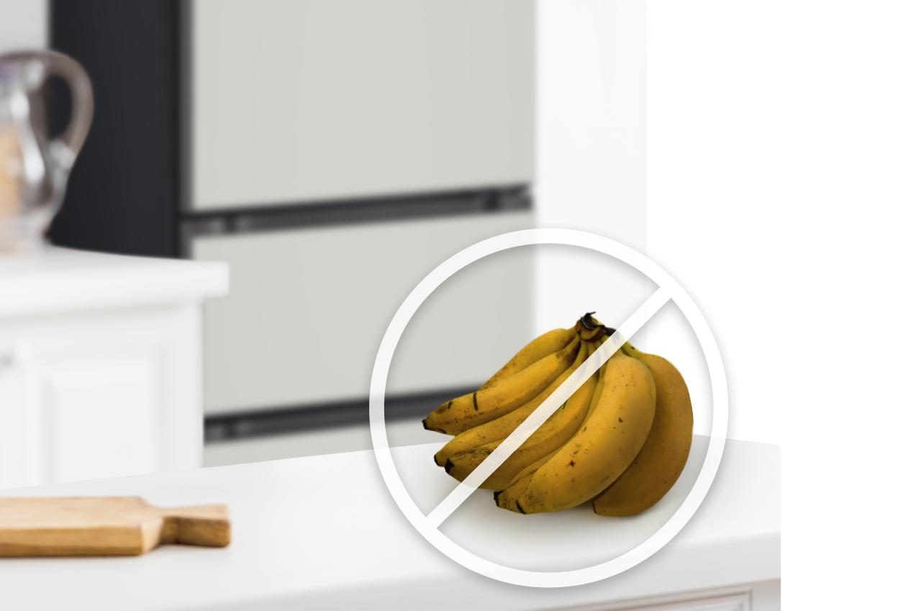

주방김치냉장고


보다 더 스마트한 일상
LG ThinQ의 시작

보다 더 스마트한 일상, LG ThinQ
씽큐는 사람과 가전을 AI 기술로 연결하여 더 편리하고 놀라운 일상을 만드는 LG전자의 스마트 홈 플랫폼입니다.
* 본 콘텐츠는 ThinQ 앱의 콘텐츠입니다.
바나나와 감자, 고구마 같은 중온 보관 식품은 어디에 보관하시나요?
베란다에 두면 너무 빨리 익어 상해버리고 냉장고에 넣으면 까맣게 변해버리는 바나나, 매번 싹이 나서 반은 버리게 되는 감자 등 중온 보관 식품은 LG 디오스김치톡톡의 쌀/잡곡 모드로 보관해 보세요!
중온 보관 식품, 일반 냉장고는 안되지만
김치냉장고는 가능해요!
특성에 맞춰 보관해요!
중온 보관 식품 보관 방법
중온 보관 식품은 실온에서 보관하면 부패하거나 과숙 현상이 발생하고, 냉장에서 보관하면 저온장해 및 미숙 현상이 발생하죠. 중온 보관 식품은 맛도 영양도 안전하게 지켜주는 LG 디오스 김치톡톡에서 보관하세요!

바나나, 감자, 고구마, 토마토와 같은 중온 보관 식품은 10℃에서 보관하는 것이 가장 좋아요. LG 디오스 김치톡톡의 쌀/잡곡 모드가 바로 중온 보관 식품을 위한 기능이죠!
보관 온도에 따른 중온 보관 식품 품질 평가
· 색 변화량 (ΔE)
수치가 높을수록 색 변화량이 크고, 수치가 낮을수록 색 변화량이 적은 것을 나타내는 초기 0일차 대비 색 변화량을 나타내는 지표
· a-value
수치가 높을수록 적색에 가깝고, 수치가 낮을수록 녹색에 가까운 색 지표
· 환원당
120℃ 이상 고온 조리 시 아크릴아마이드 생성이 촉진되며, 식약처/FDA/EU 등에서 제한할 것을 권고하는 항목
· 위 평가는 자사 제시 기준에 따라 LG 디오스 김치톡톡 쌀/잡곡모드(약 10℃)에서 14일 동안 중온 보관 식품을 보관한 세계김치연구소의 실험 결과로, 냉장(3℃) / 상온(25℃) 온도 보관 대비 품질 유지 기간이 길어진 것으로 확인되었습니다. 단, 주위 온도 25℃, 상습, 냉장고 설정 및 실제 환경에 따라 다를 수 있습니다.
감자를 잘 보관하려면?
감자 보관은 7~10℃가 적당하며 이 온도에서는 몇 주 간 저장 가능해요
감자가 햇빛을 받으면 싹이 나고 초록빛으로 변해요. 이 부위에는 솔라닌이라는 독성 물질이 있어 섭취 시 식중독의 우려가 있으니, 반드시 씨눈을 도려내고 드세요
7℃ 이하에 보관할 경우 녹말이 당으로 전환(환원당) 되어 단맛이 나고, 당도가 높아지면 조리 시 색이 어두워져요. 감자를 삶았는데 색이 어두웠던 경험 있으시죠? 냉장 보관하진 않았나요?
감자는 120℃ 이상에서 조리할 경우, 발암성을 가진 아크릴아마이드 생성이 촉진되어 식품의약품안전처(수입식품정보마루)에서제한할 것을 권고하고 있어요. 냉장 보관은 절대 피하세요!
쌀이나 잡곡을 냉장 보관하면 깨질 수 있어요
냉장 보관한 쌀을 씻으면, 물과 쌀의 온도차로 쌀알이 깨질 수 있어요. 밥을 짓고 나도 밥알이 조각나 있을 수 있지요. 쌀을 오래도록 신선하게 보관하려면 LG 디오스 김치톡톡의 쌀/잡곡 모드를 추천해요.
김치냉장고는 칸칸마다 온도를 달리 설정할 수 있고, 정온 기능이 뛰어나 일반 냉장고에서 보관하기 어려운 식품들도 신선하게 보관할 수 있어요.


LG ThinQ
ThinQ 하나로 더 좋아지는 일상
일상을 더 편하고 스마트하게 만들어주는 씽큐 앱을 지금 바로 만나보세요.
- #냉장고
- #식품
- #식품보관
- #김치냉장고
- #김치냉장고사용법
- #중온보관
- #중온보관식품
- #보관온도
- #정온기능
- #쌀/잡곡모드